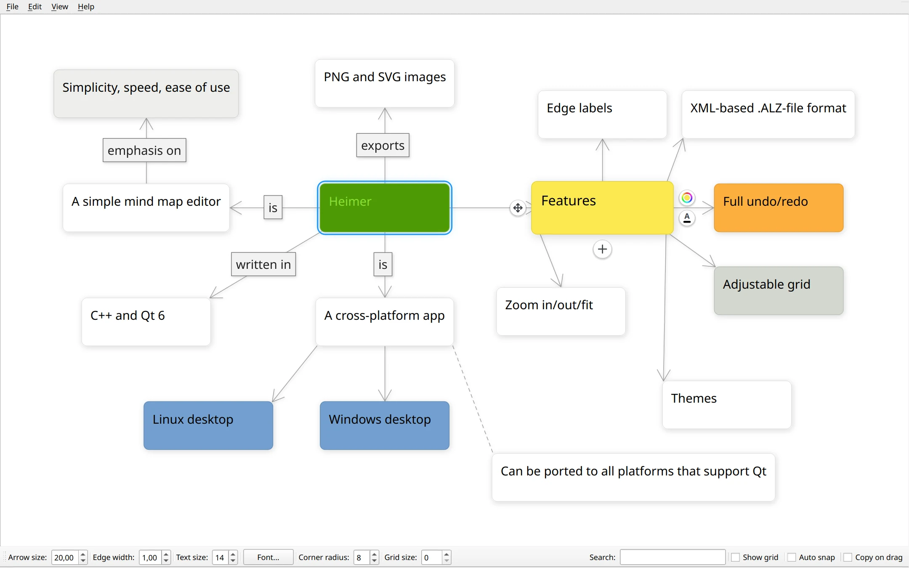
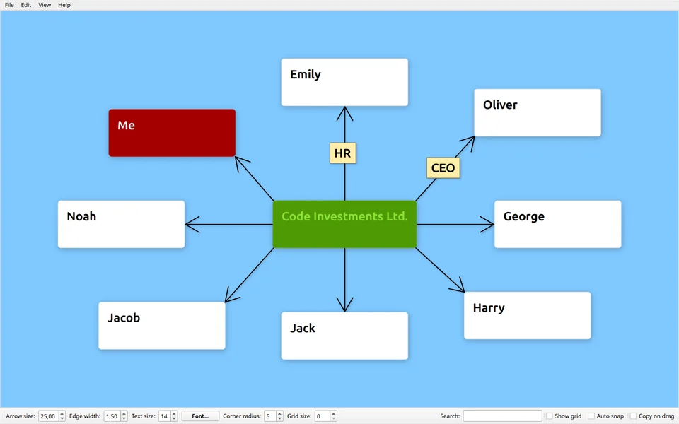
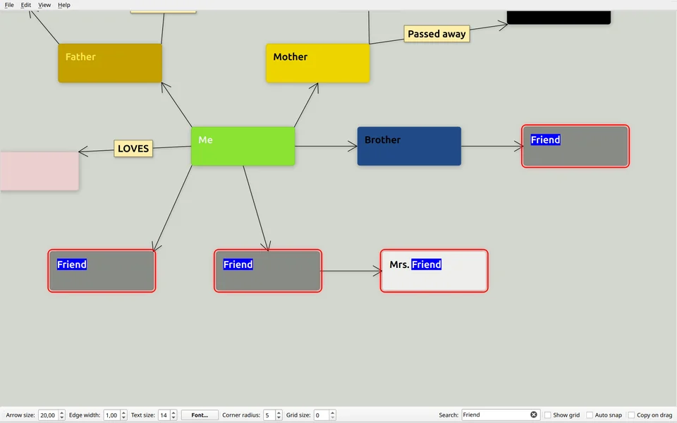
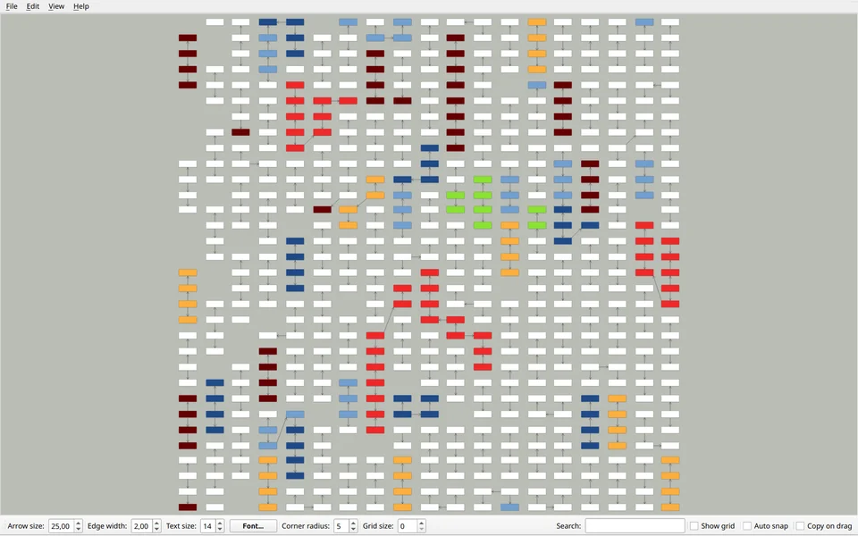
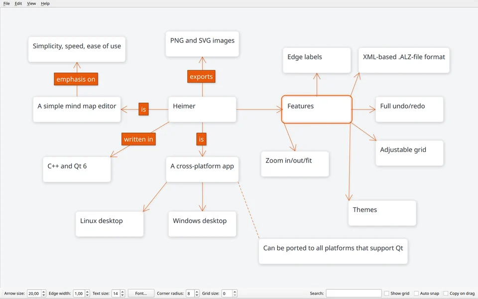
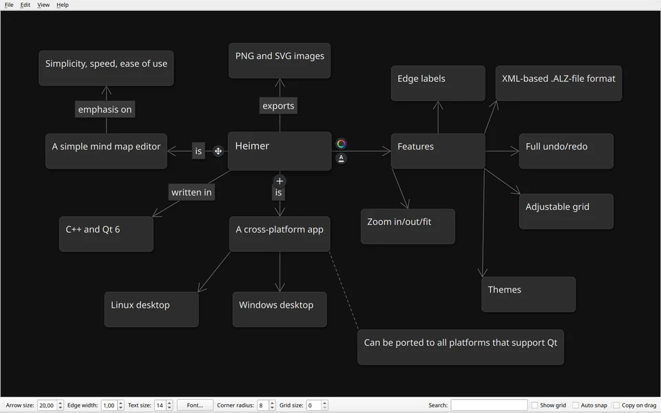
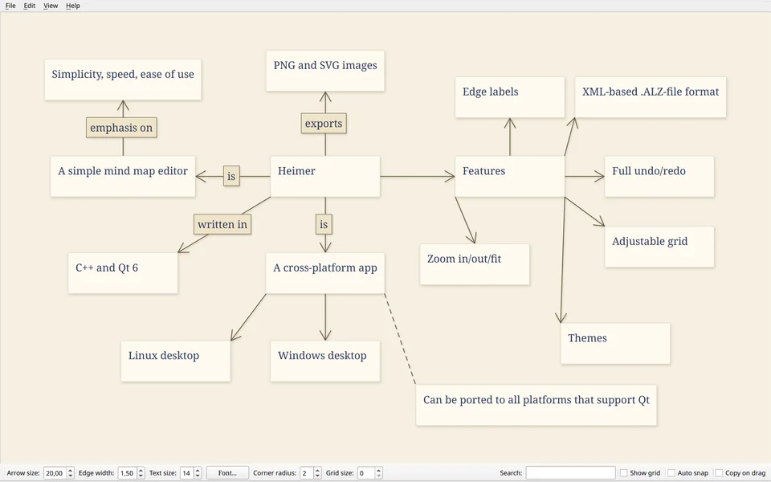

Free & open source · GPLv3 · Linux & Windows
Mind maps and diagrams, without the clutter.
Heimer is a simple and fast tool for mind maps, diagrams and notes. Drag out a new node, type, connect — and let the layout optimizer tidy up the rest.

Everything a mind map needs
And nothing that gets in the way.

Editing
- Drag from a node to create a connected child node, or to connect two nodes
- Quickly add node texts and edge labels
- Node and text colors, dashed edges and arrow styles
- Images as node backgrounds
- Select and move groups of nodes, copy on drag
- Adjustable grid with automatic snapping
- Full undo and redo

Finding & organizing
- Text search highlights the matching nodes and zooms to them
- Automatic layout optimization for maps of any size
- Zoom in, out and to fit, also with the mouse wheel at an adjustable speed
- Very fast, also with hundreds of nodes

Saving & sharing
- Open, XML-based .alz file format
- Export to PNG, optionally with a transparent background, or to SVG
- Autosave and autoload of the most recent mind map
- Recent files menu
And more
- Runs on Linux and Windows
- Translated into Basque, Chinese, Dutch, English, Finnish, French, German, Italian, Portuguese and Spanish
- Inverted controls for scrolling and selecting
- Nodes rise for easier editing when zoomed out
- Written in C++ and Qt 6
- Will always be 100% free
Themes
A theme defines the colors, fonts, sizes and shadows of a mind map.



Built-in & your own
- Built-in themes: Classic, High Contrast, Black, White, Accent and Paper
- Create your own from the current mind map or from any other theme
- Theme editor with a live preview
- Choose the default theme for new mind maps
- Applying a theme can be undone, and individual node colors can be kept
Screenshots
Download
Snap
For Linux distributions that support Snap. Updates automatically.
sudo snap install heimer
Debian package
For the supported Ubuntu LTS releases. Uses the Qt 6 of the distribution.
sudo apt install ./heimer-*.deb
AppImage
For other Linux distributions. Carries its own Qt; needs a distribution at least as recent as the oldest supported Ubuntu LTS.
chmod +x Heimer-*.AppImage
Windows
An installer, or a ZIP archive that just contains the executable.
heimer-*-win32.exe
Or build it from the source: C++ and Qt 6, licensed under GPLv3.